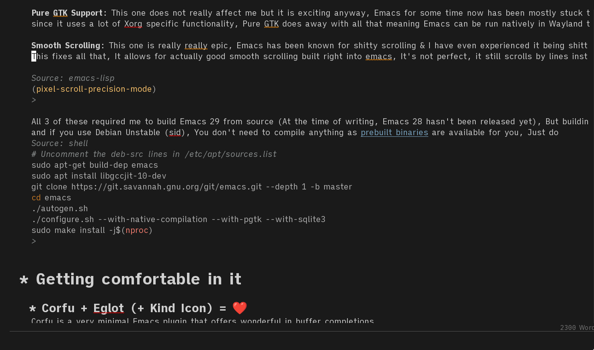

My experience with Emacs
I suppose I should explain what I am comparing it with, The main editors
I have used before this for any amount of time are, VS Code & Neovim,
both very good editors, excellent at a lot of things.
VS Code was something of a cushioned experiance, there was thought in a lot of
places but it wasn't my thought, The UI is mostly set in stone, The
configuration being done statically in JSON (Meaning, there is no way for me to
script anything) limits a lot and I just didn't feel really comfortable using
it, tho the way everything tends to just worktm is really nice. Even
using CSS to modify the VS Code UI is a difficult task, You need to go through a
few hoops to even inject CSS, which in my opinion should be a builtin feature;
VS Code's predecessor Atom had a prettier UI and was more flexible in this
respect :/
Neovim, I really enjoyed my time using Neovim, it is a very polished
editor and is very good at what it does (That is to say, good at editing
text files quickly then exiting), But I found the restrictions placed by
a Terminal User Interface to be a bit limiting with how I wanted my
editor to look, It is still very good and much more customizable than VS
Code. (All this applies to vanilla vim too)
So the main reasons I was interested in Emacs, was the fully featured
graphical user interface which was extremely flexible, The ability to
use Emacs for much more than just text editing, It can do that too but it can do a lot of other things rather well and so can be used as a sort of
integrated development enviroment for everything
My time using godot made me realize how nice of a experience that is,
And of course since I like bringing pain onto myself, I decided to forgo Doom Emacs and do a from scratch configuration.
If you are starting out with Emacs, I recommend starting with DOOM,
It's a good & fast configuration, You will have a much easier time.
Getting used to it
Getting used to Emacs wasn't really hard once I installed
evil-mode, That plugin makes Emacs
follow vim's system of insert, normal & visual modes as well as follow
vim's keybind system, Which is much more comfortable for me, and so I
didn't really need to learn how to use Emacs for editing.
After that, the main changes I had to get used to was getting rid of my
habit of opening & closing vim many times when editing several files,
Emacs isn't meant to be used like that, instead you open one Emacs
instance and you leave it open for as long as you need.
Moving around files from directly in the editor was something I needed
to get used to as well, In neovim, I would just quit the editor / spawn
a new terminal, cd to where I wanted to go, and open neovim again.
Using Emacs's bookmark system with _Consult_ has helped with moving
around a lot however.
Compiling Emacs for great good
Another reason I decided to try Emacs now of all times was that there
were 3 exciting features that had just recently been implemented, Native
Compilation, Pure GTK Support & Pixel Smooth Scrolling.
Native Compilation: This implements gccjit in Emacs to speed up
Elisp significantly, After using it personally I can't tell the
difference but many people have noticed a difference and it's a good
thing to have in the background.
Emacs Wiki page,
Paper talking about it
Pure GTK Support: This one does not really affect me but it is
exciting anyway, Emacs for some time now has been mostly stuck to the
X11 environment since it uses a lot of Xorg specific functionality, Pure
GTK does away with all that meaning Emacs can be run natively in Wayland
too.
Smooth Scrolling: This one is really really epic, Emacs has been
known for shitty scrolling & I have even experienced it being shitty
many times, It is really laggy and unnatural to use. This fixes all
that, It allows for actually good smooth scrolling built right into
emacs, It's not perfect, it still scrolls by lines instead of actual
pixels but it is quite smooth and I don't hate using it.
(pixel-scroll-precision-mode)
All 3 of these required me to build Emacs 29 from source (At the time of
writing, Emacs 28 hasn't been released yet), But building Emacs isnt
really difficult, and if you use Debian Unstable (sid), You don't need
to compile anything as [prebuilt
binaries](http://emacs.secretsauce.net/) are available for you, Just do
# Uncomment the deb-src lines in /etc/apt/sources.list
sudo apt-get build-dep emacs
sudo apt install libgccjit-10-dev
git clone https://git.savannah.gnu.org/git/emacs.git --depth 1 -b master
cd emacs
./autogen.sh
./configure.sh --with-native-compilation --with-pgtk --with-sqlite3
sudo make install -j$(nproc)
Getting comfortable in it
LSP Completion
Corfu is a very minimal Emacs plugin that offers wonderful in buffer
completions, that just worksTM
Eglot (unsurprisingly) is a mininal LSP client for Emacs. By default it
won't do much but there is a sister plugin called cape that exports more
functionality, like completing from ispell, completing file paths etc.
The two were practically made for each other \<3. They both work really
well and it was really simple to get Deno's LSP working once I figured
out that I needed to "enable" it in eglot's initialization options. (Why
isn't it enabled by default \>:( )
Kind Icon is a small addition to corfu that shows the type of whatever
item it is next to, which is pretty handy and it looks nice to boot.
If you want a more powerful lsp client with more integration / options,
You ought to check out lsp-mode. Similarly for corfu, try company-mode &
company-box-mode, If your lsp needs are fairly simple like mine are,
this duo should work just fine for you. EDIT: I have recently abandoned
eglot for lsp-mode since it suits my needs better and I found it easier
to configure
Linting
I think there is only one correct answer to this and that is
flycheck. It just works out of the box and will automatically pick
up any linters you have installed, and generally its been a install
once, and don't worry about it plugin.
I am sure it's possible to make flymake entirely usable but it seems
to be more trouble than it's worth to me.
If you want to disable the default eldoc linter which is maybe the
most stupid linter I have ever seen, do (setq flycheck-disabled-checkers '(emacs-lisp-checkdoc))
\*Haven't looked into formatting yet
Speed
On average, For me Emacs takes around 1s to fully start up, This isn't
bad at all considering I haven't gone out of my way to make it faster
and I haven't made use of daemon mode (which would make startup time
irrelevant), And since I don't close it often it matters even less. But
here are a few tricks I used to speed it up from its vanilla state
(Still not as extreme as DOOM Emacs does tho).
Some of these techniques for fast startup I've documented in our FAQ.
The highlights are:
package-initialize or, if you use straight like Doom does,
bootstrapping straight. It also means no 200+ package-installed-p
checks on startup.
This saves on hundreds of file reads at startup (assuming you have
hundreds of packages installed). I byte-compile it too.
not).
The biggest gains come from lazy loading packages. Especially the big
ones, like org, helm, and magit. Doom goes a bit further with this. A
couple examples:
deferred until your first input (pre-command-hook) or the first
file is opened (:before after-find-file).
org-babel-do-load-languages, but on demand when their src blocks
are encountered (fontified) or executed. Same with its export
backends.
i.e. After 2s afk, it loads one of dash, f, s, with-editor,
git-commit, package, eieio, lv, then transient every second,
before finally loading magit (these are its dependencies). This
process bows out when it detects user activity, and continues
later when Emacs has been idle again for 2s. This helps with that
first-time-load delay when starting magit. org and helm get
similar treatment.
immediately.
Besides that, I've collected tidbits of elisp over the years that
appear to help startup time, sometimes inexplicably. Here are a couple
off the top of my head:
(add-to-list 'default-frame-alist '(font . "Fira Code-14"))
instead of (set-frame-font "Fira Code-14" t t). The latter does
more work than the former, under the hood.
(setq frame-inhibit-implied-resize t) – Emacs resizes the (GUI)
frame when your newly set font is larger (or smaller) than the
system default. This seems to add 0.4-1s to startup.
(setq initial-major-mode 'fundamental-mode) – I don't need the
scratch buffer at startup. I have it a keybind away if I do.
Starting text-mode at startup circumvents a couple startup
optimizations (by eager-loading a couple packages associated with
text modes, like flyspell), so starting it in fundamental-mode
instead helps a bit.
An odd one: tty-run-terminal-initialization adds a couple seconds to
startup for tty Emacs users when it is run too early. After deferring
it slightly, this doesn't appear to be an issue anymore. Not a big tty
Emacs user, so YMMV.
I can't say how much of each has contributed to helping my start up
times but in general, The best advice I (personally) can give is to
async everything as much as possible. The garbage collector and the file
alist trick help a fair bit as well.
Org Mode
I was always skeptical of how good org mode would be, Cause I had seen
emacs users proclaim org mode as the killer feature for Emacs which I
disagreed with (and still do) but now I understand what they were
talking about, It is really amazing how flexible org mode is.
It is the more powerful / flexible markdown I had always wanted, and
tried to achieve with nesdown. And it actually looks /
feels good to edit too, since you can smartly hide almost all of the
syntactic visual noise and get a very clean experience editing it.
And if you want to send your document to someone, there are myriad of
ways you can export your document, for example: this whole article was
written in org mode and exported to HTML, I might consider abandoning
nesdown entirely; Org does the same job and does it better with much
better editor integration. Not being able to directly write html feels a
bit stifling but I am going to consider it as a lesson in self control
(yes, this is me just coping with it)
Org has made me actually interested in taking digital notes, instead of
ones with pen and paper, Its agenda features are really capable as well,
Though I haven't been able to grasp them fully just yet.
I have yet to try out org-roam, but I am excited to do so, It looks
really interesting for note taking.
I am going to try doing a thing I've wanted to do with it, I want to
replicate the appearance of the document in my editor in my website so
that WYSIWYG.
Though I would like to see a _bit_ more flexibility when it comes to
syntax, I much prefer some of markdown's syntax compared to what org has
(though its not too bad) and would like to customize some parts of the
export process. Example: I would like to display keybindings on my site
from a document written in org, but Org has no way to export
<kbd></kbd> tags out of the box, and the few SO solutions I have found
seems to be pretty ugly hacks in my opinion, I'll have to try and see
which one isn't broken yet. M-x doctor - Hey I got it to work :)
Making Org Mode Pretty
Before you delve any deeper, This is the end result in my Emacs
configuration,

*Font used is
iA Writer Quattro - It's been made for iA writer which is a Markdown
editor for MacOS, that looks really good.*
org-hide-emphasis-markers automatically hides any inline
emphasis markers which leads to a much cleaner look.
org-pretty-entities converts text symbols into their unicode
counterparts to <backslash>lambda becomes \lambda For the list
bullets, Besides org-hide-leading-stars, I use org-superstar (a
improved version of org bullets), With all the heading stars changed
to *; I originally had a space to hide most stars but that broke
indent mode too much. Then I set all the list bullets to use the
unicode bullet character (•)
The rest is just customizing highlight groups, with `customize-group
org-faces`.
EDIT: *I have found a plugin that does a lot of this in a much
better way than I could,
org-modern, It also replaces
org-superstar*
Besides that I have done some other tweaks in places to clean up the
experiance when editing, example: Using padding around the entire
emacs window, Disabling parts of the default UI, Showing word count
on the mode line.
You can see all the customizations I made in:
appearance.el
writing.el
custom.el
Consult
One thing I missed quite a lot from Neovim was telescope, That is an
amazing plugin that allows you to very quickly search through and filter
files, contents of files, buffers, tabs, functions in the file etc. It
didn't take long till I found
consult which combined with
vertico replicates most of the
experience I want as well if not better than telescope (Combining
various useful things in the buffer selection menu),
Tho since it runs the file searching functions in the same dir as the
current file when I usually want it to run in the parent directory which
is the actual project folder, It still needs some work, as does Emacs so
it does not cd to the folder which contains my code, but opens it
relative to the project folder.
Other Stuff
Vterm mode provides a excellent terminal that just worksTM,
and I didn't need to do any particular configuration for it.
Neotree & Treemacs are only file trees I have tried, and I prefer the
way neotree works more than treemacs, Speedtree would be decent if it
didn't popup a new window and could use icons
Parinfer becomes a bit of a pain when it disagrees with me, but when it
does work, It is lisp editing heaven but your mileage may vary.
My buddy nuxsh also wrote a similar article:
<https://nuxsh.is-a.dev/blog/emacs.html>